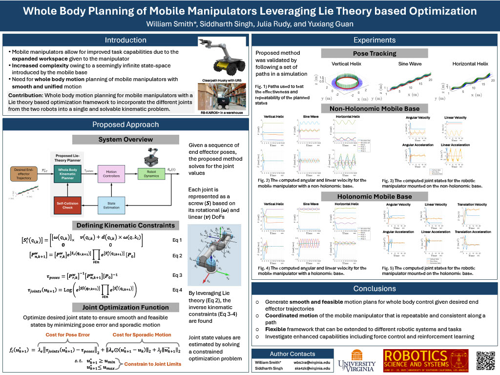
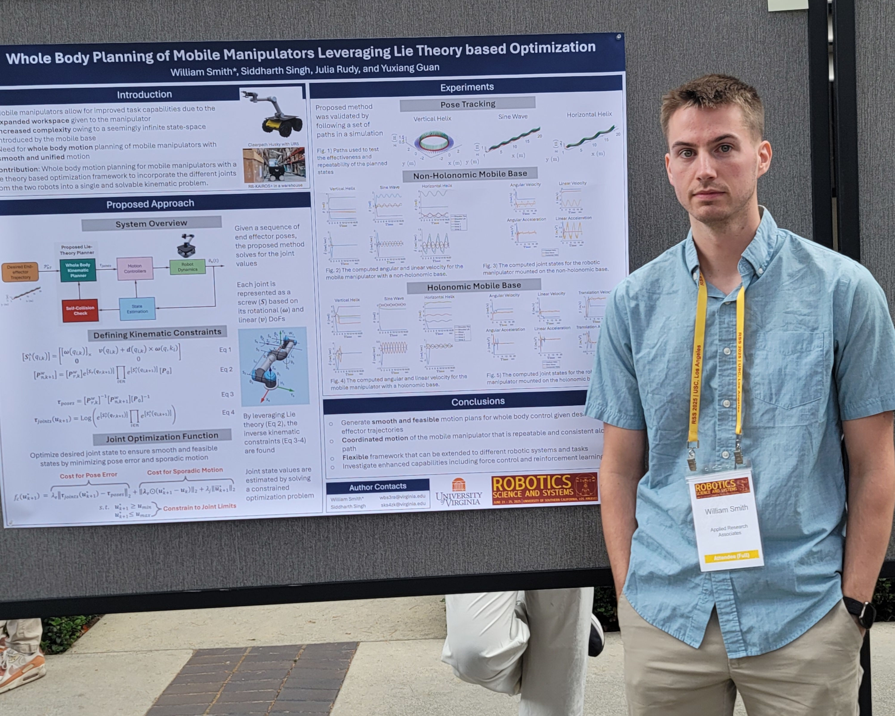

Projects
High Precision Multi-Stage Mapping
Research and developed a framework for efficient and guaranteed high precision mapping for unknown indoor environment. The proposed framework consists of three stages, starting with a 3D lidar before adding a depth camera. The first stage is to construct a globally accurate coarse map to be used for planning the optimal path, in stage two, to achieve the desired map resolution and accuracy, in stage three. Stage three required online trajectory correction of the sensor suite to ensure the desired metrics are satisfied. Then the new scan is registered to the growing coarse map based on a weighting scheme between the coarse and fine map matching scores.
Whole Body Planner for Mobile Manipulation
 Researched and developed a whole body planner for mobile manipulators based on Lie theory kinematic constraints with a customizable optmization function for smoothness. Presented at Mobile Manipulation: Emerging Opportunities and Contemporary Challenges Workshop at RSS 2025 in Los Angeles, California.
Additive Manufacturing with a Mobile Manipulator
Worked with another graduate research to collaborate with an architecture research group to prototype mobile manipulator for additive manufacturing. The clay medium required precise coordination of the mobile base and manipulator to ensure the structure was built appropriately without knocking over the structure. The prototype was demonstrated successfuly with a >15 minute printing task that maintained the desired shape with minimal drift.
Multi-Robot Team for Mapping and Inspection
Worked with a group of other graduate researchers to develop a team of robots (UGV & UAVs) for mapping and inspection of large areas. Developed mobile-manipulator pipelines with remote monitoring and feedback. Implemented RTAB-Map based SLAM pipelines and graph-based motion planners for navigation.
Visual Servoing for Basic Manipulation Tasks
Developed systems to perform basic manipulation tasks with a human in the loop supervisor for maintanance. Main goal was to identify and localize emergency buttons in an environment. The robot would then travel to the location and identify the available buttons for a remote user to select before executing the motion to achieve the task.
Indoor Mapping for Robot Navigation and Collaboration
Implemented RTAB-Map for fusing Lidar and depth cameras to empircally determine the best sensor suite for robot navigation and collaboration.
Ball Tracking and Chasing
Designed and implemented a balling tracking algorithm for a ROSbot 2 in ECE 6501 Automous Mobile Robots (UVA). The ball would be rolled in front of the robot with initial detection using blog detection from the depth camera and tracking using an EKF. The robot would then chase the ball and when it loses sight of the ball the robot would have to travel to the ball's estimated position 5 seconds in the future to regain sight.
Driving Simulator
Mentored undergraduate research assistants creating a full motion driving simulator by reviewing proposed designs and providing technical guidance on dynamic controls and communication protocols.
Robot Building
Created a large UGV with autonomous capabilities and an industrial manipulator. Construction included a replaceable wiring harness to allow for repair of individual components. Software included mapping and basic manipulation tasks with the ability to further perform specilized tasks.
Autonomous Campus Vehicles
Worked on a team with five other undergraduate students to design and build a pair of autonomous capable golf carts for our capstone project (UVA). The golf carts were modified to provided drive by wire controls and sensors were added to map the environment in an GPS limited environment. The golf carts were able to be controlled via a wireless joystick while creating a map by fusing a lidar and two stereo cameras for future localization. As a graduate student, caravanning capabilities were added so that a person could drive the first golf cart and the second golf cart could follow based on visual servoing and shared pose beliefs.